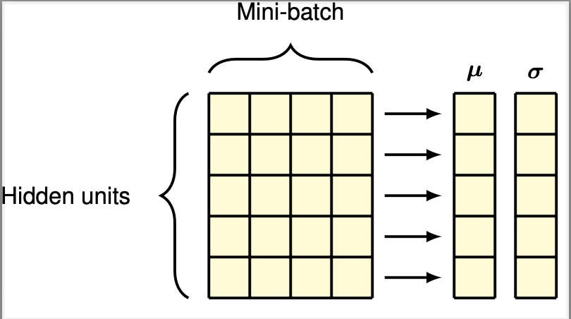

Batch normalization #
In batch normalization the mean and variance are computed across the mini-batch separately for each feature/hidden unit. For a mini-batch of size B \[ \mu_i = \frac{1}{B} \sum_{n=1}^{B} a_{ni} \] \[ \sigma_i^2 = \frac{1}{B} \sum_{n=1}^{B} (a_{ni}-\mu_i)^2 \] We normalize the pre-activations as follows. \[ \hat{a}_{ni} = \frac{a_{ni}-\mu_i}{\sqrt{\sigma_i^2+\delta}} \] \[ \tilde{a}_{ni} = \gamma_i \hat{a}_{ni} + \beta_i \]
PyTorchm = nn.BatchNorm1d(num_features)
Layer normalization #
In layer normalization the mean and variance are computed across the feature/hidden unit for each example seprately. \[ \mu_n = \frac{1}{M} \sum_{i=1}^{M} a_{ni} \] \[ \sigma_n^2 = \frac{1}{M} \sum_{i=1}^{M} (a_{ni}-\mu_i)^2 \] We normalize the pre-activations as follows. \[ \hat{a}_{ni} = \frac{a_{ni}-\mu_n}{\sqrt{\sigma_n^2+\delta}} \] \[ \tilde{a}_{ni} = \gamma_n \hat{a}_{ni} + \beta_n \]
PyTorchLayer Normalization, J. L. Bao, J. R. Kiros, and G. E. Hinton, 2016
layer_norm = nn.LayerNorm(enormalized_shape)
RMSNorm #
Root Mean Square Layer Normalization, B. Zhang, R. Sennrich, NeurIPS 2019.
Collateral #
https://pytorch.org/docs/stable/nn.html#normalization-layers